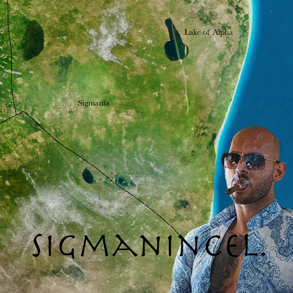
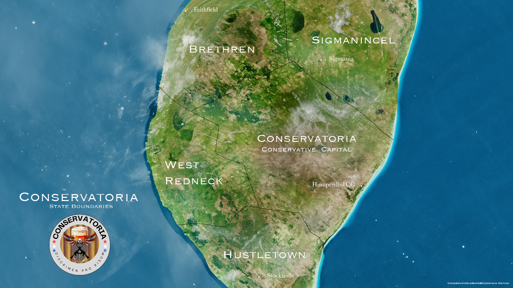

The Five States
West Redneck
Parallax scrolling is a web site trend where the background content is moved at a different speed than the foreground content while scrolling. Nascetur per nec posuere turpis, lectus nec libero turpis nunc at, sed posuere mollis ullamcorper libero ante lectus, blandit pellentesque a, magna turpis est sapien duis blandit dignissim. Viverra interdum mi magna mi, morbi sociis. Condimentum dui ipsum consequat morbi, curabitur aliquam pede, nullam vitae eu placerat eget et vehicula. Varius quisque non molestie dolor, nunc nisl dapibus vestibulum at, sodales tincidunt mauris ullamcorper, dapibus pulvinar, in in neque risus odio. Accumsan fringilla vulputate at quibusdam sociis eleifend, aenean maecenas vulputate, non id vehicula lorem mattis, ratione interdum sociis ornare. Suscipit proin magna cras vel, non sit platea sit, maecenas ante augue etiam maecenas, porta porttitor placerat leo.
A happy resident of West Redneck
Sigmanincel

A fan-made map of Sigmanincel
Parallax scrolling is a web site trend where the background content is moved at a different speed than the foreground content while scrolling. Nascetur per nec posuere turpis, lectus nec libero turpis nunc at, sed posuere mollis ullamcorper libero ante lectus, blandit pellentesque a, magna turpis est sapien duis blandit dignissim. Viverra interdum mi magna mi, morbi sociis. Condimentum dui ipsum consequat morbi, curabitur aliquam pede, nullam vitae eu placerat eget et vehicula. Varius quisque non molestie dolor, nunc nisl dapibus vestibulum at, sodales tincidunt mauris ullamcorper, dapibus pulvinar, in in neque risus odio. Accumsan fringilla vulputate at quibusdam sociis eleifend, aenean maecenas vulputate, non id vehicula lorem mattis, ratione interdum sociis ornare. Suscipit proin magna cras vel, non sit platea sit, maecenas ante augue etiam maecenas, porta porttitor placerat leo.
Brethren
Parallax scrolling is a web site trend where the background content is moved at a different speed than the foreground content while scrolling. Nascetur per nec posuere turpis, lectus nec libero turpis nunc at, sed posuere mollis ullamcorper libero ante lectus, blandit pellentesque a, magna turpis est sapien duis blandit dignissim. Viverra interdum mi magna mi, morbi sociis. Condimentum dui ipsum consequat morbi, curabitur aliquam pede, nullam vitae eu placerat eget et vehicula. Varius quisque non molestie dolor, nunc nisl dapibus vestibulum at, sodales tincidunt mauris ullamcorper, dapibus pulvinar, in in neque risus odio. Accumsan fringilla vulputate at quibusdam sociis eleifend, aenean maecenas vulputate, non id vehicula lorem mattis, ratione interdum sociis ornare. Suscipit proin magna cras vel, non sit platea sit, maecenas ante augue etiam maecenas, porta porttitor placerat leo.
Bretherens conducting a sacred religious ceremony
Hustletown
Hustle big in Hustletown.
Parallax scrolling is a web site trend where the background content is moved at a different speed than the foreground content while scrolling. Nascetur per nec posuere turpis, lectus nec libero turpis nunc at, sed posuere mollis ullamcorper libero ante lectus, blandit pellentesque a, magna turpis est sapien duis blandit dignissim. Viverra interdum mi magna mi, morbi sociis. Condimentum dui ipsum consequat morbi, curabitur aliquam pede, nullam vitae eu placerat eget et vehicula. Varius quisque non molestie dolor, nunc nisl dapibus vestibulum at, sodales tincidunt mauris ullamcorper, dapibus pulvinar, in in neque risus odio. Accumsan fringilla vulputate at quibusdam sociis eleifend, aenean maecenas vulputate, non id vehicula lorem mattis, ratione interdum sociis ornare. Suscipit proin magna cras vel, non sit platea sit, maecenas ante augue etiam maecenas, porta porttitor placerat leo.
Conservatoria Conservative Capital
Parallax scrolling is a web site trend where the background content is moved at a different speed than the foreground content while scrolling. Nascetur per nec posuere turpis, lectus nec libero turpis nunc at, sed posuere mollis ullamcorper libero ante lectus, blandit pellentesque a, magna turpis est sapien duis blandit dignissim. Viverra interdum mi magna mi, morbi sociis. Condimentum dui ipsum consequat morbi, curabitur aliquam pede, nullam vitae eu placerat eget et vehicula. Varius quisque non molestie dolor, nunc nisl dapibus vestibulum at, sodales tincidunt mauris ullamcorper, dapibus pulvinar, in in neque risus odio. Accumsan fringilla vulputate at quibusdam sociis eleifend, aenean maecenas vulputate, non id vehicula lorem mattis, ratione interdum sociis ornare. Suscipit proin magna cras vel, non sit platea sit, maecenas ante augue etiam maecenas, porta porttitor placerat leo.
John Humperdink giving a press release on the newly appointed military budget
In summary
To cater for the natural differences and individuality of our citizens, we have split Conservatoria into four distinct states representing their own respect conservative archaetype. These four states, Sigmanincel, Brethren, West Redneck, and Hustletown provide centralised, specialised like minded communities within our like minded country. posuere mollis ullamcorper libero ante lectus, blandit pellentesque a, magna turpis est sapien duis blandit dignissim. Viverra interdum mi magna mi, morbi sociis. Condimentum dui ipsum consequat morbi, curabitur aliquam pede, nullam vitae eu placerat eget et vehicula. Varius quisque non molestie dolor, nunc nisl dapibus vestibulum at, sodales tincidunt mauris ullamcorper, dapibus pulvinar, in in neque risus odio. Accumsan fringilla vulputate at quibusdam sociis eleifend, aenean maecenas vulputate, non id vehicula lorem mattis, ratione interdum sociis ornare. Suscipit proin magna cras vel, non sit platea sit, maecenas ante augue etiam maecenas, porta porttitor placerat leo.

Conservatoria by Axel
Clark is
licensed under Creative Commons
Attribution-NonCommercial 4.0
International